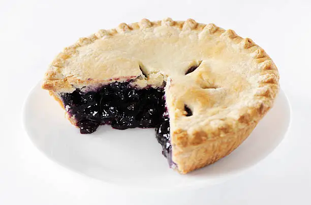

This is a delicious blueberry pie recipe that is perfect for any occasion. The sweet and tangy blueberries are complemented by a flaky, buttery crust. Serve it warm with a scoop of vanilla ice cream for an extra treat!
Preheat your oven to 375°F (190°C). Roll out one pie crust and fit it into a 9-inch pie pan. Trim any excess dough hanging over the edges.
In a large bowl, combine the blueberries, sugar, cornstarch, salt, lemon juice, and vanilla extract. Gently toss until the blueberries are evenly coated.
Pour the blueberry mixture into the prepared pie crust. Dot the top with small pieces of butter.
Cover the edges of the pie with aluminum foil to prevent them from burning. Bake for 50-60 minutes, or until the crust is golden brown and the filling is bubbly.
Remove the pie from the oven and let it cool for at least 2 hours before serving. This allows the filling to set properly.
Serve the blueberry pie warm or at room temperature, optionally with a scoop of vanilla ice cream or a dollop of whipped cream. Enjoy!